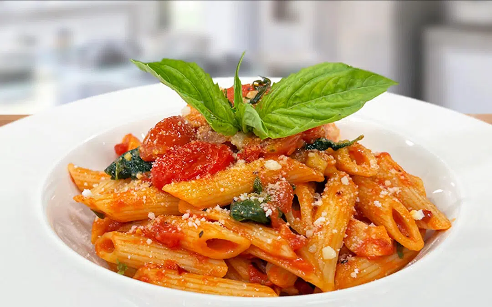

Penne All’Arrabbiata

Home
A simple recipe but great flavour
Hello friends, today I am going to share a recipe my Mom (a Cordon Bleu Chef) taught me for the best Penne all'Arrabbiata I ever tasted.
All'Arrabbiata is very similar to a fresh Pomodoro sauce, but spicey.
Ingredients
For The Tomato Sauce:
- 4 cloves Garlic, thinly sliced
- 60 ml Garlic Olive Oil
- 5 ml fresh Red Chili or Chili Flakes, adjust to taste
- 794 g can Italian Peeled Tomatoes, roughly chopped
- 15 g Fresh Italian Parsley, chopped
- 10-12 Fresh Basil Leaves, torn
- 30 ml Unsalted Butter
- Salt and Pepper to taste
- 30 g Pecorino Romano Cheese, grated (or Parmesan)
- Additional Fresh Basil Leaves, for garnish
For the Pasta
For the Salsa (optional):
- 10 g Garlic Olive Oil
- 1 Shallot minced
- 5 ml fresh Red Chili or Chili Flakes, adjust to taste
- 3 Garlic sliced very thin
- 4 to 6 Basil Leaves torn
- 18 g Parsley Leaves chopped
- 1 ½ cups Cherry Tomatoes cut in half
Recipe Instructions
Prepare the Tomato Sauce:
- Heat olive oil in a pan over medium heat. Add the garlic to the pan and cook until fragrant, about 20-30 seconds.
- Add the red chili to the pan, adjusting the quantity based on your desired level of spiciness.
- Add the chopped Italian peeled tomatoes to the pan. Allow the tomato mixture to cook for 15/20 minutes until the tomatoes break down and the flavors meld together.
- Stir in the chopped Italian parsley and torn basil leaves.
Prepare the “Salsa” to add on top of the pasta (optional):
- In a small sauté pan, heat the olive oil, when hot add the shallots and cook for a couple minutes.
- Add the chili pepper, basil, parsley and cherry tomatoes.
- Add salt and pepper to taste and cook for 10 minutes at medium to low heat!
Prepare the Pasta
- Bring a large pot of salted water to a rolling boil.
- Add the penne pasta and cook according to the package instructions until al dente.
- Drain the cooked pasta, reserving a small amount of pasta water.
- Toss the drained pasta with a drizzle of olive oil to prevent sticking and set aside.
Assemble the Dish:
- Return the tomato sauce to low heat and add the cooked penne pasta to the sauce.
- Toss the pasta in the sauce, ensuring even coating. Add the unsalted butter to the pasta and sauce mixture, stirring until the butter melts and incorporates.
- Season with salt and pepper to taste. Adjust the chili flakes if more spiciness is desired. Sprinkle grated pecorino Romano cheese over the pasta and stir to combine.
- If you prepared the “salsa” add a couple tablespoons on top of each serving.
Serving the Dish:
- Divide the Penne All'Arrabbiata among serving plates.
- Garnish with additional torn basil leaves and a drizzle of garlic or pesto olive oil.
- Serve immediately, optionally with extra cheese on the side for sprinkling.
- Enjoy your delicious and slightly indulgent Penne All'Arrabbiata with its flavorful tomato and spicy kick, topped with a touch of buttery richness and fresh basil!